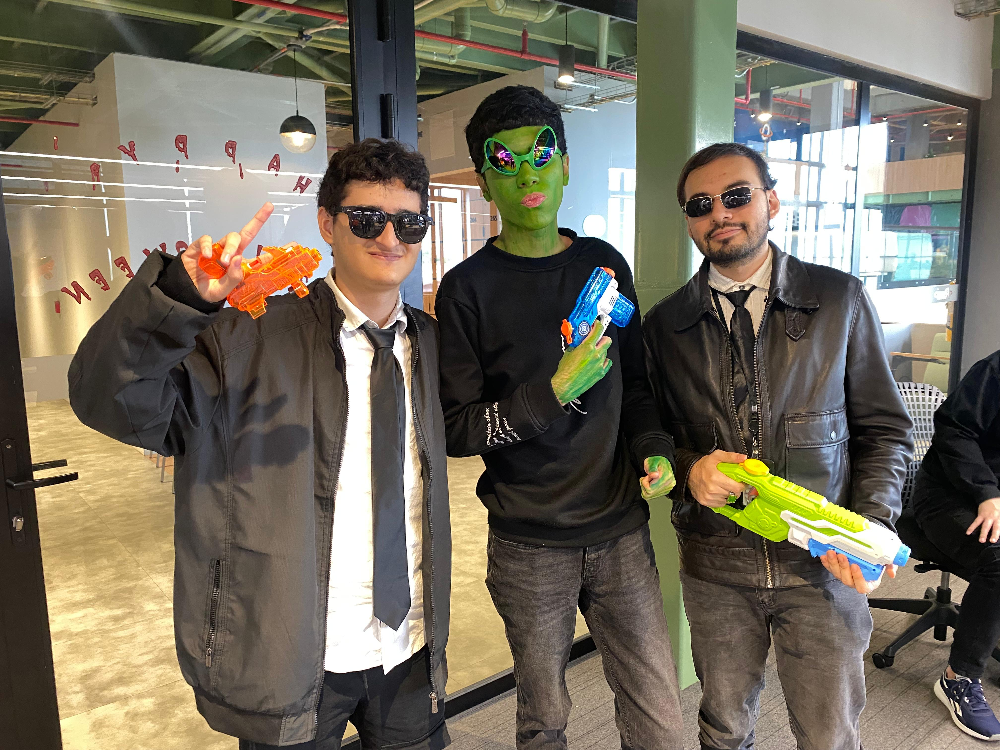

PERSONAL SHOPPER · NIVEL LEYENDA DEL HUECO
Emanuel Lopez
Cinturón negro en regateo con "rebajita incluida", GPS humano entre Carabobo y Junín, y capaz de encontrar un tornillo específico en El Hueco en menos de 4 minutos. Incluye Guardias. (Advertencia: puede regresar con empanadas extra para el camino).
9.9
412 encargos · Regateo 5.0 · Velocidad 4.9
Junín · El Hueco
8:00 – 19:00
300 555 0101

#1
★ 9.9
Emanuel · Shopper Oficial
Disponible ahora en el centro